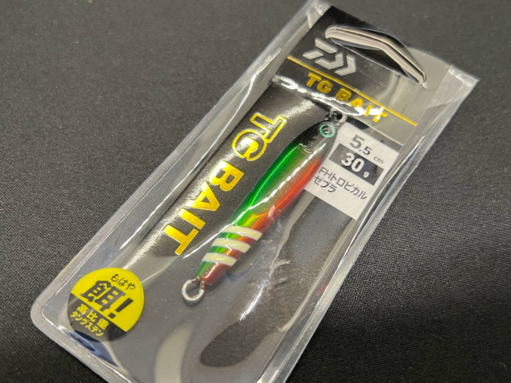
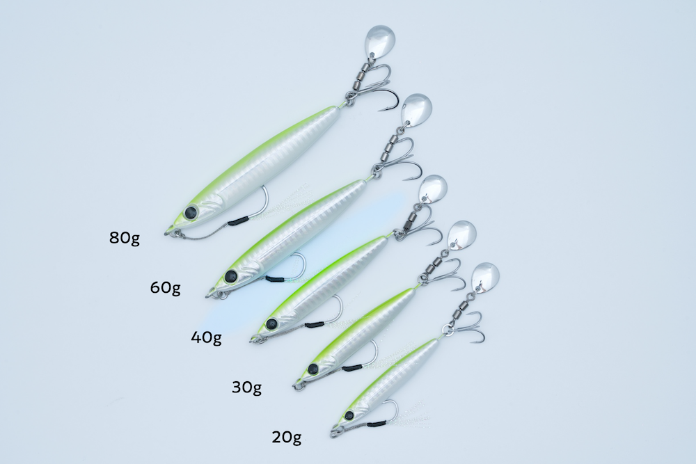
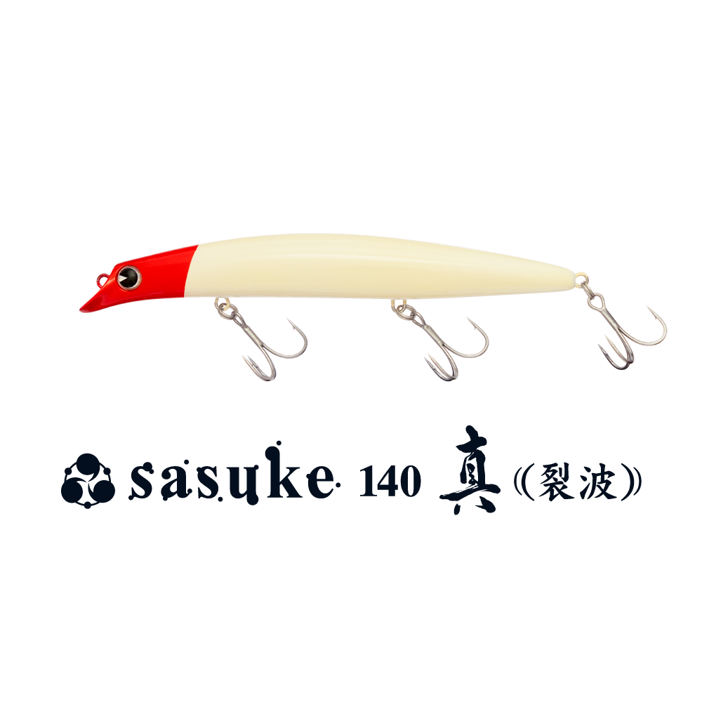

武庫川一文字で釣れてる人が使っている隠れた名作ルアー4選
武庫川一文字は大阪湾随一の好釣り場だからこそ、定番ルアーへのプレッシャーも高い。ビッグバッカー・ジグパラ・マキマキ・セットアッパーは確かに釣れる。でも「みんなと同じルアーを同じように投げていれば、同じ結果になる」のも事実だ。
この記事では各ジャンルの定番ルアーの「惜しいところ」を正直に書いた上で、それを補う隠れた名作を1本ずつ紹介する。定番を否定するのではなく、「定番＋この1本」で釣果に差をつける発想だ。
目次
メタルバイブレーション
アイアンマービー109（エバーグリーン）
定番：ビッグバッカー107（ジャッカル）
武庫川一文字で最もよく見かけるメタルバイブ。107mmのミノーライクなナチュラルアクションと3フック仕様で青物・サワラに幅広く対応する実力派。持っていて損はない1本だ。
🎯 名作：アイアンマービー109（エバーグリーン）

画像出典:エバーグリーン公式HP
「回らない・絡まない」をコンセプトに、ライン絡みのストレスを極限まで減らすことにこだわって設計された鉄板バイブ。スリムなテール形状・低重心ウェイト・フックアイ形状に至るまで、トラブルレスのために作り込まれている。37gの自重で武庫川の速い潮流でも安定してレンジをキープでき、さらに状況に応じて使い分けられる2つのラインアイを搭載する。
- メーカー
- エバーグリーン（EVERGREEN）
- 長さ
- 109 mm
- 重さ
- 37 g
- アイ
- リアアイ（標準：タイトウォブリング）／フロントアイ（喰わせ：I字〜超タイトウォブリング）
- ターゲット
- 青物・シーバス・サワラ・ヒラメ
- 価格
- 1,700円前後
使い方のポイント
朝マズメの高活性時はリアアイ接続でミディアムリトリーブ。日中の渋い時間はフロントアイに切り替えてスローリトリーブのI字スイム、もしくはデッドスロー後の高速リトリーブでリアクションを狙う。フォールでのバイトも多いため、ポーズを入れる使い方も効果的。


メタルジグ
TGベイト（ダイワ）
定番：ジグパラショート（メジャークラフト）
コスパ最強・開封即使える・飛距離も申し分ない。ショアジギングの入門ジグとして不動の地位を持つ定番中の定番。武庫川でも非常によく見かける。
🎯 名作：TGベイト（ダイワ）

「より小さいシルエットで重いジグを」というニーズに特化したタングステン製メタルジグ。タングステンは鉛（比重約11.3）の約1.5〜1.7倍の比重を持つため、同じ重さでもジグパラショートよりひとまわり以上ボディが小さくなる。武庫川でナブラが立っているのにジグを無視される状況、マイクロベイトを偏食している難しい場面でこそ本領を発揮する。
- メーカー
- ダイワ（DAIWA）
- 推奨重さ
- 30g / 45g（武庫川推奨）
- 素材
- タングステン（比重約17〜19）
- アクション
- 左右非対称ボディによるイレギュラーウォブリング＋フォール時フラッタリング
- ターゲット
- 青物・シーバス・サワラ・ヒラメ
- 価格
- 2,000円〜（30g）
使い方のポイント
ワンピッチジャークがメイン。ジャーク後のフォールで左右非対称ボディがひらひらと不規則に沈む——この動きが追尾してきた青物の喰わせの間になる。TGベイトが「よく釣れるジグ」として長く支持されている理由はこのフォールアクションにある。ジグパラに反応しない日は迷わずTGベイトに交換してみよう。


ブレードジグ
Zブレード（ジーク）
定番：ジャックアイマキマキ（ハヤブサ）
元祖ブレードジグとして武庫川でも長年実績を積んできた定番。高速巻きでのアクティブなブレードフラッシングが青物・サワラを広範囲から引き寄せる力は本物だ。
🎯 名作：Zブレード（ジーク）

画像出典:ジーク公式HP
2026年4月発売の比較的新しいブレードジグ。亜鉛合金（比重約6.8）という低比重素材を採用することで、同重量の鉛系ブレードジグよりスローなフォールを実現した。ポイントはフォール中もブレードが回転し続けること——つまりリトリーブ中だけでなくフォール中もアピールし続けるブレードジグだ。
- メーカー
- Zeake（ジーク）
- 推奨重さ
- 25〜40g（武庫川推奨）
- 素材
- 亜鉛合金（比重約6.8・低比重）
- アクション
- フォール中もブレードが回転し続けるスローフォールフラッシング
- ターゲット
- 青物・サワラ・ヒラメ・タチウオ
- 価格
- 935〜1,265円
使い方のポイント
リフト＆フォールがベスト。ボトムを取ってからロッドを持ち上げてリフト→フリーフォールでゆっくり沈める。このフォール中にブレードが回転し続けるのがZブレードの真骨頂。ポーズを意識的に長めにとることでフォールバイトを量産できる。タダ巻きでも使えるが、Zブレードの真価はフォールにある。


ミノー
SASUKE140真裂波（ima）
定番：セットアッパー125S-DR（ダイワ）
サゴシ・ハマチ狙いのショア青物界隈で絶大な人気を誇るシンキングミノー。重さと飛距離を活かしたディープレンジ対応で、武庫川でも実績の高い1本だ。
🎯 名作：SASUKE140真裂波（ima）

画像出典:アイマ公式HP
2004年から「キングオブソルトウォーターミノー」として愛され続ける裂波シリーズの最新フラッグシップ。2024年9月に登場した真裂波はMRD（磁石の反発力を活かした重心移動システム）を初搭載し、23gのフローティングながら最長飛距離75mを実現した。セットアッパーがシンキングで潜っていく間に、真裂波は60〜100cmのシャローを浮き上がりながら誘い続ける——上ずった青物への刺さり方が根本的に違う。
- メーカー
- ima（アイマ / アムズデザイン）
- 長さ
- 140 mm
- 重さ
- 23 g
- フック
- #4×3（3フック）
- タイプ
- フローティング
- レンジ
- 60〜100cm
- アクション
- ウォブンロール（魚を寄せる揺らぎ）
- 重心移動
- MRD搭載 / 最長飛距離75m
- 発売
- 2024年9月
- 価格
- 2,640円（税込）
使い方のポイント
スロー〜ミディアムのただ巻きがメイン。フローティングなのでラインを張って巻けばレンジ60〜100cmをキープし、止めると浮き上がる。この浮き上がりの瞬間にバイトが集中する。セットアッパーを投げながら青物が上ずり始めたと感じたら迷わず真裂波に切り替えよう。


4本のローテーション戦略
定番を捨てる必要はない。まず定番で広くサーチして反応を確認し、「なぜか食わない」状況になった時に今回紹介した1本を投入するのが正しい使い方だ。
「定番＋この1本」という2本体制が揃えば、状況の変化に対応できる引き出しが一気に増える。隣の人が釣れなくて首を傾げている横で静かにランディングする——そんな釣りが待っている。